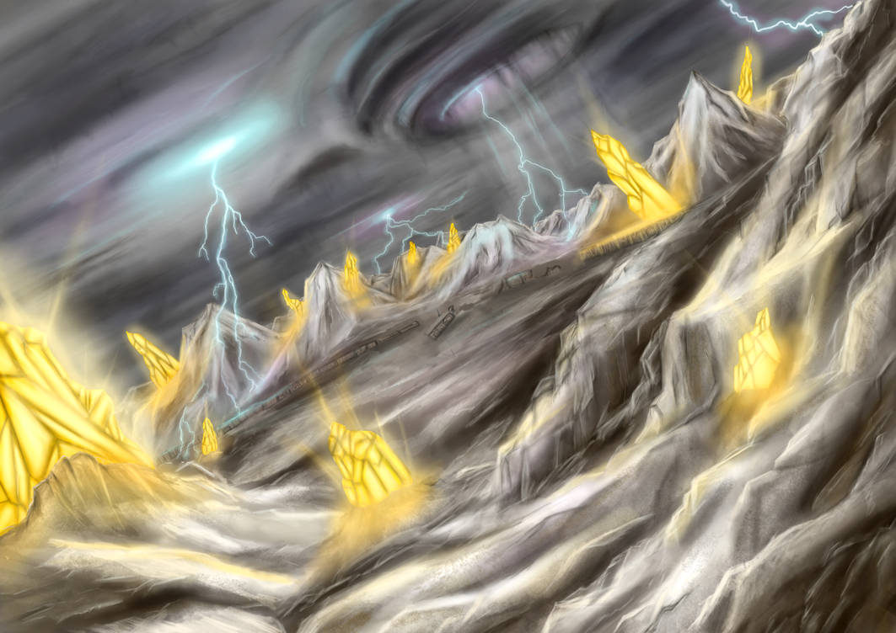

Безкрайні льодові рівнини з кристалами, що зберігають спогади загублених цивілізацій.
У безмежному просторі, де час завмер, розкинулася Кришталева Пустка — світ, де лід і кристали сплітаються в химерні візерунки. Тут панує вічна зима, а повітря наповнене шепотом вітру, що проноситься крізь кришталеві шпилі. Кожен кристал зберігає спогади про давні цивілізації, їхні мрії та трагедії. Під світлом двох місяців, що відбивається у крижаних поверхнях, Пустка виглядає як зачароване царство, де кожен крок відкриває нові таємниці.
У цьому світі живуть створіння, що ідеально пристосовані до жорстоких умов. Світанкові Стражі, із прозорими крилами, можуть маніпулювати світлом і створювати ілюзії. Кристалідни — напівпрозорі істоти, що володіють здатністю зберігати та передавати енергію через свої кристалічні тіла.
Клімат тут дуже нестабільний: інколи виникають теплові спалахи, що розтоплюють поверхню, створюючи нові структури. А рідкі потоки з кристалів, що виглядають як рідкий скло, мають магічні властивості — здатні як лікувати, так і завдавати шкоди.
